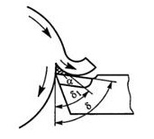

Методом металлографического анализа установлено, что при образовании сливной стружки на передней поверхности режущего инструмента иногда образуется слой металла - нарост, который по строению отличается от обрабатываемого материала и стружки. Нарост - это результат сложного процесса, происходящего в зоне контакта режущей части инструмента с обрабатываемым материалом.
Наиболее достоверным объяснением нароста, очевидно, является последнее. В этом случае из-за большого давления со стороны стружки на инструмент и высокой температуры пластически деформированного металла, а также под влиянием микронеровностей на передней поверхности, происходит торможение нижнего слоя стружки, вследствие чего образуется тонкий заторможенный слой и течение металла в стружку происходит по этому слою с преодолением внутреннего трения. При определенных условиях заторможенный слой начинает расти образуя новое тело прочно присоединенное к инструменту (нарост).
Так как сходящая стружка скользит по не по вершине резца, а по передней поверхности нароста, действительный передний угол как бы увеличивается, что способствует облегчению процесса резания. Вследствие высокой твердости нароста он, выполняя функции режущего лезвия, отчасти предохраняет переднюю и заднюю грани инструмента от истирания их сходящей стружкой и обработанной поверхностью. Это в свою очередь приводит к уменьшению изнашивания инструмента, т.е. к повышению его стойкости.
Вместе с тем наличие нароста увеличивает шероховатость обработанной поверхности. Еще Я.Г. Усачев в 1915 году установил, что нарост является причиной появления неровностей на обработанной поверхности детали даже в условиях свободного резания.
Процесс образования неровностей на обрабатываемой поверхности по мере снятия сливной стружки сводится к следующему. Нарост, обладающий весьма высокой твердостью, выполняет функцию режущего лезвия. Он удлиняет резец, что и является причиной некоторого увеличения толщины реза по сравнению с номинальной. В определенный момент выступающая часть нароста оказывается столь большой, что она срезается, отделяясь от основной части нароста. Часть его уходит со стружкой, а часть остается вдавленной в обработанную поверхность. Эта частица нароста является выступающим краем неровностей. Разрушение нароста приводит к мгновенному уменьшению толщины среза. В дальнейшем размеры нароста снова увеличиваются и толщина реза постепенно возрастает, пока его выступающая часть опять не будет сорвана и унесена обработанной поверхностью, образуя край очередной неровности. Этот процесс повторяется периодически, в результате чего вся обработанная поверхность оказывается усеянной неровностями.
Размеры нароста зависят от соотношения величин сил трения между образующейся стружкой и передней поверхностью инструмента и сил внутреннего сцепления (сопротивления сдвигу) обрабатываемого материала. Чем значительней по величине первая сила т.е. сила трения превосходит вторую, тем больше размеры нароста.
При определенных условиях обработки на величину силы трения решающее влияние оказывает температура, возникающая в зоне образования стружки, или температура, возникающая в зоне образования стружки, или температура резания, величина которой находится в прямой зависимости от скорости резания. Поэтому основной причиной изменения величин нароста с изменением скорости резания является температура резания. От ее величины сильно зависит величина коэффициента трения стружки о переднюю поверхность инструмента. При низких скоростях, когда температура в зоне резания невелика, коэффициент трения относительно небольшой, поэтому нароста здесь еще нет или он мал по величине.
При повышении скорости резания растет температура, следовательно, увеличивается и коэффициент трения стружки о переднюю поверхность инструмента. Достигнув определенной температуры, он становится максимальным. В этот момент нарост получает наибольшие размеры. Дальнейшее повышение скорости и температуры вызывает размягчение пограничных слоев металла, уменьшение коэффициента трения и размеров нароста.
На величину нароста оказывает влияние также физико-механические свойства обрабатываемого металла (пластичность и прочность), толщина среза, передний угол инструмента, условия охлаждения и смазки в зоне резания и т.д.
Закономерности изменения размеров нароста совершенно аналогичны закономерностям изменения высоты неровностей на обработанной поверхности в зависимости от скорости резания.